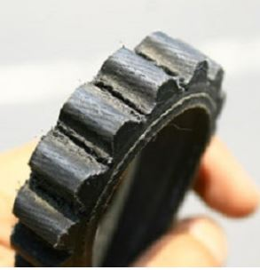

The ride long distances often create new problems in the vehicle when returning home. Usersautomatic motorcycle for example. Many have complained about the noise in the CVT area whenreturning from a long journey. The problem that often occurs in the scooter. Many consumers shop who complained of thiscondition. Usually in CVT noise arises because the rubber V-belt wear, roller bender, CVT greasedry, or it could be due to the CVT dirty. The main cause of this problem, which arises when excess heat CVT hard work. Easily emerge ifthe ramp met and jammed. Usually riders utilize the spin machine to put a halt to the motor so as not to resign. In fact, it was just excruciating work CVT as an energy supplier to the wheels.Take advantage of the one functioning brake to hold the bike while on the road uphill. Steps that must be done, disassemble and check CVT parts one by one. Check the roller issmooth or not. Continue checking the rubber V-belt with a reversed way, check each indentation.Make sure there are no cracks that could potentially make the V-belt broke.
If the rubber roller and the CVT is good, proceed to the examination of the lubricating grease in the area of CVT. Excessive heat makes the grease dries quickly and can be the cause of the sounds in the area of CVT. Remember, grease aka fat used is also special.
This flyball or rollers are cylinder shape like that is installed in the drive pulley. Its purpose is for the acceleration and top speed of your scoot. This flyball also comes in different weight or size. The size will depend on how you will like your scooter to run. Is it with high acceleration or with a high top speed. Combining the size of flyball will vary in different reason, from the weight of your scooter, the rider's weight, your engine power, center spring RPM and tire size. A drive pulley is installed with 6 flyballs in its slot, this will help the pulley on how it will work for the scooter. Combining their weight and size is much harder than you think. It takes lot of test and combination to perfect the size of your flyball that will suit the scooter. Let me give you some tips on how you can combine your flyball depending on your scooter and your weight.
Generally speaking heavier flyball gives you a higher top speed but considering the scooter weight that the flyball can be lighter or heavier. Usually ended up choosing from 9 grams to 13 grams flyball. Combination is a bit confusing but can be test from pulling some combinations from your own. You can also combine different size but for the maximum of 2 size only, example is you combine three 10 grams flyball and three 12 grams flyball. It is recommended if you want to balance your acceleration and top speed. But remember that heavy flyball can make your scooter loose its acceleration. Try different combinations and hope that you will find your right taste of flyballs sizes.
In terms of lighter flyball, they gives you high acceleration but bot that high in means of top speed. Best sizes for small riders and light scooters. The size will vary from 7 grams to 9 grams and will depend on your choice of combination. Try to vary the size by 1 gram each combination so you can come up with a combination that is suitable for you and your comfortability while running.
Replace every 20,500 km replace belt and fly ball, it defends the location or area.